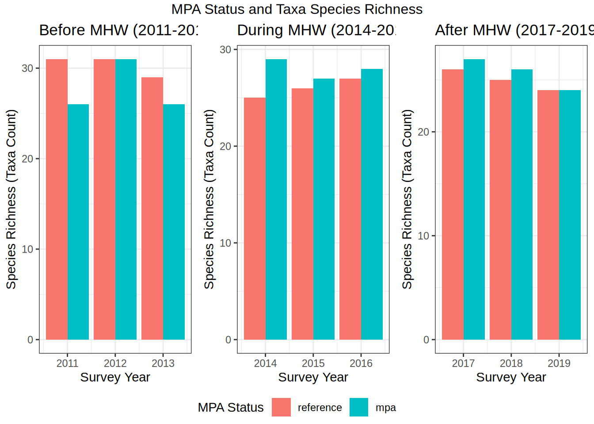
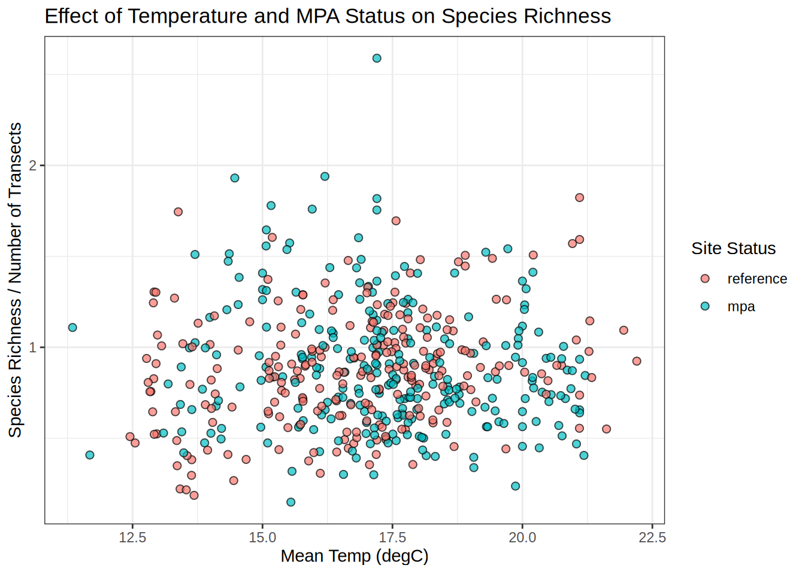
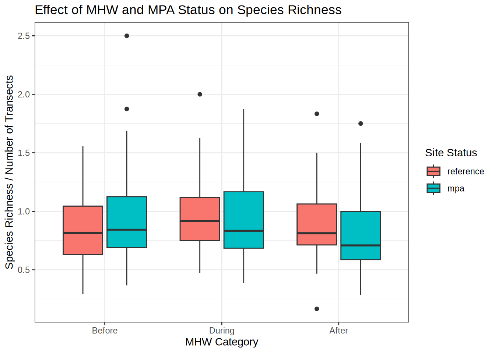
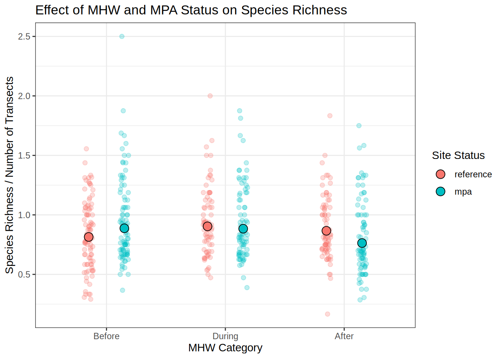

flowchart LR %% Create DAG %% Water temp affects nutrient and prey availability for predator species water_temp --> species_richness %% PH affects nutrient and prey availability for predator species pH --> species_richness %% MPA_status affects fishing/harvesting/outside access which impacts species richness MPA_status --> species_richness %% Pollution can make water more or less acidic depending on the pollution type pollution --> pH %% Pollution can introduce poisons to the ecosystem pollution --> species_richness %% Climate change effects can reduce the number of species climate_change[climate change] --> species_richness %% Climate change effects can increase water temp climate_change --> water_temp
Effect of MPAs on Kelp Forest Resilience to Marine Heat Waves
Kelp forests play important roles in preserving global biodiversity, performing ocean carbon (CO2) absorption, providing biomass and nursery habitats related to the fishing industry, and protecting coastline communities from erosion effects. There is an assumption in some policy and scientific communities that MPAs - originally designed to conserve kelp forest ecosystems and rebuild fishery habitats after overfishing events - also protect these ecological communities from the effects of climate change, like marine heatwave (MHW)-caused damage. Many global communities rely on fishing economies, and if negative effects from MHWs and other climate change-related events are, in fact, being ameliorated by the existance of MPAs, that would be a fantastic side-effect. However, there appears to be disagreement in scientific and policy opinions on whether or not there is evidence that MPAs render any positive effect on California kelp forest communities (Ober, et al. 2025; Ortiz-Villa, et al. 2025; Smith, et al 2023). If MPAs are not actually having a positive effect on ecosystem resilience to MHWs, this needs to be identified and another type of ecosystem remediation is needed to protect essential kelp forest communities from the effects of climate change.
For this analysis, species richness will be used as a surrogate measurement for ecosystem resilience. The directed acyclic diagram (DAG) in Figure 1 maps out the environmental relationships between various factors possibly affecting species richness in kelp forests. In this blog post, two predictors will be used to estimate species richness: 1) water temperature - converted into categories for before, during, and after the 2014-2016 MHW, and 2) MPA status - whether a kelp forest was in an MPA (at least partially protected from fishing activity) or reference area (unprotected). Pollution and pH are not in my dataset, which could introduce bias into my results as both have potentially major effects on species survivability in kelp forests. While some water temperature information was available in the PISCO dataset used in this analysis, MHW categories of before, during, and were determined and used instead to avoid incorporating seasonal water temperature changes into the model’s predictions.
Here, a model will be designed to answer the following question: Did kelp forests in Southern California long-term marine protected areas (MPAs) have better resistance to the 2014-2016 marine heatwave (MHW) than unprotected Southern California Kelp Forests? In this analysis, resistance defined as less change in the observed statistic (species richness) from before (2011-2013) to during (2014-2016) and after (2017-2019).
Figure 1: DAG displaying the relationships between variables, including MPA status and water temperature, related to species richness in kelp forests.
Statistical Analysis
# Load packages
library(tidyverse)── Attaching core tidyverse packages ──────────────────────── tidyverse 2.0.0 ──
✔ dplyr 1.2.1 ✔ readr 2.2.0
✔ forcats 1.0.1 ✔ stringr 1.6.0
✔ ggplot2 4.0.3 ✔ tibble 3.3.1
✔ lubridate 1.9.5 ✔ tidyr 1.3.2
✔ purrr 1.2.2
── Conflicts ────────────────────────────────────────── tidyverse_conflicts() ──
✖ dplyr::filter() masks stats::filter()
✖ dplyr::lag() masks stats::lag()
ℹ Use the conflicted package (<http://conflicted.r-lib.org/>) to force all conflicts to become errorslibrary(here)here() starts at /home/smsoriano/EDS222/EDS222_KelpForestMPAslibrary(ggpubr)
library(MASS)
Attaching package: 'MASS'
The following object is masked from 'package:dplyr':
selectset.seed(222)
set_theme(theme_bw())# Load data
# Fish transect-level survey
fish_df <- read_csv(here('data','PISCO_kelpforest_fish.1.11.csv'))Rows: 446881 Columns: 25
── Column specification ────────────────────────────────────────────────────────
Delimiter: ","
chr (11): campus, method, site, zone, level, classcode, sex, observer, surge...
dbl (14): survey_year, year, month, day, transect, count, fish_tl, min_tl, m...
ℹ Use `spec()` to retrieve the full column specification for this data.
ℹ Specify the column types or set `show_col_types = FALSE` to quiet this message.# Site table (MPA status)
site_df <- read_csv(here('data','PISCO_kelpforest_site_table.1.11.csv'))Rows: 10405 Columns: 9
── Column specification ────────────────────────────────────────────────────────
Delimiter: ","
chr (6): campus, method, site, MPA_Name, mpa_type, site_status
dbl (3): survey_year, latitude, longitude
ℹ Use `spec()` to retrieve the full column specification for this data.
ℹ Specify the column types or set `show_col_types = FALSE` to quiet this message.# Taxa table (Classcode definition)
taxa_df <- read_csv(here('data','PISCO_kelpforest_taxon_table.1.11.csv'))Rows: 693 Columns: 43
── Column specification ────────────────────────────────────────────────────────
Delimiter: ","
chr (43): campus, sample_type, sample_subtype, classcode, Kingdom, Phylum, C...
ℹ Use `spec()` to retrieve the full column specification for this data.
ℹ Specify the column types or set `show_col_types = FALSE` to quiet this message.# Find columns to merge on btwn fish and site dfs
shared_cols_fish <- intersect(colnames(fish_df), colnames(site_df))
# print(shared_cols_fish)
# Filter sites df before join
site_filt_df <- site_df |>
# Keep Southern CA sites and remove any site_status "N/A"s
filter((campus == "UCSB") & (site_status %in% c("mpa","reference"))) |>
# Group by site (site name), site_status (site type - mpa or reference)
group_by(site, site_status) |>
# Remove duplicate rows - only need one row per site, site_status
slice(1) |>
ungroup() |>
# Keep relevant columns in site df for mpa/ref status labeling of fish_df
dplyr::select(site, MPA_Name, mpa_type, site_status)
# Merge mpa status to fish df
fish_mpa_df <- fish_df |>
# Filter to relevant years, Southern CA
filter((survey_year >= 2011) & (survey_year <= 2019) & (campus == "UCSB")) |>
# Remove unecessary and duplicate columns
dplyr::select(-campus,-year,-method) |>
# Join to site_filt_df to label mpa/ref sites
inner_join(site_filt_df,
by = join_by(site)
) |>
# Remove MPAs without a type (only SMR or SMCA), also keep references
filter((mpa_type %in% c("SMR", "SMCA")) | (site_status == "reference")) |>
# Create MHW year categories
mutate(MHW_Category = ifelse(
(survey_year >= 2014 & survey_year <= 2016),
"During",
ifelse(
(survey_year >= 2017),
"After",
"Before"
)
)) |>
mutate(MHW_Category = factor(MHW_Category, levels = c("Before", "During", "After")),
site_status = factor(site_status, levels = c("reference", "mpa"))) |>
# Calculate species richness (row count) and total biomass_g (sum row_weight_g) per site, site_status, year, month combo
summarise(species_richness = n_distinct(classcode),
total_biomass_g = sum(row_weight_g, na.rm = TRUE),
mean_temp_C = mean(temp, na.rm = TRUE),
n_transects = n_distinct(paste(day, zone, level, transect)),
.by = c(survey_year, month, MPA_Name, mpa_type, site, site_status, MHW_Category))Negative Binomial - Species Richness
Scientific Hypothesis: MPA-designated Kelp forests in Southern California had better resilience to the 2014-2016 MHW event than unprotected Southern California kelp forests.
Statistical H_null: Southern California MPA and reference kelp forests experienced the same change in species richness before, during, and after the 2014-2016 MHW in Southern California.
Statistical H_alt: Southern California MPA kelp forests had less change in species richness before, during, and after the 2014-2016 MHW compared to reference Southern California kelp forests.
Visualize the data
Each row is contains measurements at a single site in a single month. species_richness is the number of species recorded in the month at that site. mean_temp_C is the mean water temperature in degrees C for that month at that site.
# Plot bar plot for "Before" MHW
plt1 <- fish_mpa_df |>
mutate(`MPA Status` = site_status) |>
filter(MHW_Category == "Before") |>
ggplot(aes(x = survey_year,
y = species_richness,
fill = `MPA Status`)) +
geom_bar(stat = "identity", position = "dodge") +
theme_bw() +
labs(title = "Before MHW (2011-2013)",
x = "Survey Year",
y = "Species Richness (Taxa Count)")
# Plot bar plot for "During" MHW
plt2 <- fish_mpa_df |>
mutate(`MPA Status` = site_status) |>
filter(MHW_Category == "During") |>
ggplot(aes(x = survey_year,
y = species_richness,
fill = `MPA Status`)) +
geom_bar(stat = "identity", position = "dodge") +
theme_bw() +
labs(title = "During MHW (2014-2016)",
x = "Survey Year",
y = "Species Richness (Taxa Count)")
# Plot bar plot for "After" MHW
plt3 <- fish_mpa_df |>
mutate(`MPA Status` = site_status) |>
filter(MHW_Category == "After") |>
ggplot(aes(x = survey_year,
y = species_richness,
fill = `MPA Status`)) +
geom_bar(stat = "identity", position = "dodge") +
theme_bw() +
labs(title = "After MHW (2017-2019)",
x = "Survey Year",
y = "Species Richness (Taxa Count)")
# Arrange plts in one figure
figure = ggarrange(plt1,plt2,plt3, nrow = 1, ncol = 3, common.legend = TRUE, legend = "bottom")
annotate_figure(figure, top = "MPA Status and Taxa Species Richness")
Figure 2: Bar plots showing fish taxa species richness (number of taxa per transect observation) in MPA and reference areas before, during, and after the 2014-2016 MHW.
# Scatter plot - mean_temp_C vs species richness
fish_mpa_df |>
mutate(`Site Status` = site_status) |>
ggplot(aes(x = mean_temp_C, y = species_richness/n_transects, fill = `Site Status`)) +
geom_point(
position = position_jitter(height = 0.2, width = 0),
shape = 21,
size = 2,
alpha = 0.7
) +
labs(x = "Mean Temp (degC)",
y = "Species Richness / Number of Transects",
title = "Effect of Temperature and MPA Status on Species Richness")
Figure 3: Scatter plot of (monthly) mean temperature (degC) and species richness (count per transect), colored by site status (MPA or reference).
# Boxplot plot - MHW_Category vs species richness
fish_mpa_df |>
mutate(`Site Status` = site_status) |>
ggplot(aes(x = MHW_Category, y = species_richness/n_transects, fill = `Site Status`)) +
geom_boxplot() +
labs(x = "MHW Category",
y = "Species Richness / Number of Transects",
title = "Effect of MHW and MPA Status on Species Richness")
Figure 4: Boxplot of 2014-2016 marine heatwave (MHW) category (Before, During, After) and species richness (count per transect), colored by site status (MPA or reference).
Fit the model
The model in statistical notation is:
\[ \begin{aligned} \text{SpeciesRichness} &\sim \text{NegBin}(\lambda, \theta) \\ \log(\lambda) &= \beta_0 + \beta_1 \text{(MHW = During)} + \beta_2 \text{(MHW = After)} + \beta_3 \text{(Status = MPA)} + \beta_4 (\text{(MHW = During)} * \text{(Status = MPA)} + \beta_5 \text{(MHW = After) * (Status = MPA)} + \text{log(n\_transects)}) \end{aligned} \]
# Fit Poisson model: species_richness ~ mean_temp_C * site_status and offset (coef = 1) accounting for the number of transects per site measured
sr_p_mpa_glm <- glm(species_richness ~ MHW_Category * site_status + offset(log(n_transects)), family = poisson(link = "log"), data = fish_mpa_df)# Fit NegBin model: species_richness ~ mean_temp_C * site_status and offset (coef = 1) accounting for the number of transects per site measured
sr_nb_mpa_glm <- glm.nb(species_richness ~ MHW_Category * site_status + offset(log(n_transects)), data = fish_mpa_df)Interpret the coefficients
# Poisson model summary
summary(sr_p_mpa_glm)
Call:
glm(formula = species_richness ~ MHW_Category * site_status +
offset(log(n_transects)), family = poisson(link = "log"),
data = fish_mpa_df)
Coefficients:
Estimate Std. Error z value Pr(>|z|)
(Intercept) -0.23087 0.02274 -10.151 < 2e-16 ***
MHW_CategoryDuring 0.09902 0.03554 2.786 0.00533 **
MHW_CategoryAfter 0.06772 0.03617 1.872 0.06118 .
site_statusmpa 0.07382 0.03244 2.276 0.02285 *
MHW_CategoryDuring:site_statusmpa -0.10390 0.04990 -2.082 0.03732 *
MHW_CategoryAfter:site_statusmpa -0.21765 0.05064 -4.298 1.73e-05 ***
---
Signif. codes: 0 '***' 0.001 '**' 0.01 '*' 0.05 '.' 0.1 ' ' 1
(Dispersion parameter for poisson family taken to be 1)
Null deviance: 963.40 on 505 degrees of freedom
Residual deviance: 932.11 on 500 degrees of freedom
AIC: 3328.2
Number of Fisher Scoring iterations: 4# Check dispersion statistic - sum(residuals^2) / n - k
pois_disp_stat = sum(residuals(sr_p_mpa_glm)^2) / df.residual(sr_p_mpa_glm)
# pois_disp_stat = 4.42, much larger than 1 so data is overdispersed and NegBin will be used# NegBin model summary
summary(sr_nb_mpa_glm)
Call:
glm.nb(formula = species_richness ~ MHW_Category * site_status +
offset(log(n_transects)), data = fish_mpa_df, init.theta = 22.43220183,
link = log)
Coefficients:
Estimate Std. Error z value Pr(>|z|)
(Intercept) -0.20511 0.03142 -6.529 6.64e-11 ***
MHW_CategoryDuring 0.10394 0.04843 2.146 0.03186 *
MHW_CategoryAfter 0.06180 0.04879 1.267 0.20526
site_statusmpa 0.08570 0.04479 1.913 0.05571 .
MHW_CategoryDuring:site_statusmpa -0.10799 0.06802 -1.588 0.11238
MHW_CategoryAfter:site_statusmpa -0.21228 0.06824 -3.111 0.00187 **
---
Signif. codes: 0 '***' 0.001 '**' 0.01 '*' 0.05 '.' 0.1 ' ' 1
(Dispersion parameter for Negative Binomial(22.4322) family taken to be 1)
Null deviance: 545.98 on 505 degrees of freedom
Residual deviance: 529.21 on 500 degrees of freedom
AIC: 3226.7
Number of Fisher Scoring iterations: 1
Theta: 22.43
Std. Err.: 3.17
2 x log-likelihood: -3212.682 For reference (unprotected) sites before the 2014-2016 MHW, we expect a log species richness of -0.205. During the MHW, log species richness at reference sites increased by 0.104 (p-value = 0.032) compared to before the MHW. After the MHW, log species richness at reference sites increased by 0.062 (p-value = 0.205) compared to before the MHW.
For MPA sites before the MHW, they had an expected log species richness 0.086 (p-value = 0.056) above reference sites. The two interaction terms define how MPA sites changed differently in log species richness from reference sites between MHW phases: -0.108 for the change from before to during the MHW (p-value = 0.112), and -0.212 for the change from before to after the MHW (p-value = 0.002).
# Exponentiate to transform back to count-scale
exp(coef(sr_nb_mpa_glm)) (Intercept) MHW_CategoryDuring
0.8145572 1.1095383
MHW_CategoryAfter site_statusmpa
1.0637509 1.0894835
MHW_CategoryDuring:site_statusmpa MHW_CategoryAfter:site_statusmpa
0.8976390 0.8087407 Since these log values are difficult to interpret, we can exponentiate them to get back to count values (per transect). In reference sites before the 2014-2016 MHW, the expected species richness was 0.815 species per transect, and in MPA sited before the MHW, the expected species richness was 1.09 times that value (9% higher)(p-value = 0.056).
During the MHW, the species richness of reference sites was multiplied by 1.11 (11% increase compared to before the MHW) (p-value = 0.032), and after the MHW, the species richness of reference sites was only multiplied by 1.06 (6% increase compared to before the MHW) (p-value = 0.205).
Concerning interations effects between MPA status and MHW phase, MPA and reference sites did not change in species richness significantly differently from before to during the MHW (0.898 times the reference before the MHW value, p-value = 0.112, 1.11 x 0.898 = 0.996 times the MPA before the MHW value). However, MPA and reference sites did change significantly differently in species richness from before to after the MHW - 0.809 times the reference change (p-value = 0.002), resulting in a ~14% decline (1.064 x 0.809 = 0.860) in MPA species richness from before to after the MHW.
Convert log counts to counts
# Create prediction grid with all possible predictor combos, all to predict a species richness count in 1 transect
sr_mpa_pred_grid <- expand_grid(
MHW_Category = factor(c("Before", "During", "After"), levels = c("Before", "During", "After")),
site_status = factor(c("reference","mpa"), levels = c("reference","mpa")),
n_transects = 1
)# Use predictor grid to generate species_richness predictions using NegBin model
sr_mpa_pred_grid$lambda <- predict(
sr_nb_mpa_glm,
type = 'response',
newdata = sr_mpa_pred_grid
)Visualize the predictions
# Boxplot plot - MHW_Category vs species richness
sr_mpa_pred_grid$`Site Status` <- sr_mpa_pred_grid$site_status
fish_mpa_df |>
mutate(`Site Status` = site_status) |>
ggplot(aes(x = MHW_Category, y = species_richness/n_transects, color = `Site Status`)) +
# Plot raw data as points
geom_point(
position = position_jitterdodge(jitter.width = 0.15, dodge.width = 0.6),
alpha = 0.25,
size = 1.8
) +
# Plot predictions as larger points
geom_point(
data = sr_mpa_pred_grid,
aes(y = lambda, fill = `Site Status`),
position = position_dodge(width = 0.6),
size = 3.8,
shape = 21,
color = "black"
) +
labs(x = "MHW Category",
y = "Species Richness / Number of Transects",
title = "Effect of MHW and MPA Status on Species Richness")
Figure 5: Expected model predictions of species richness (per transect) for MPA and reference kelp forests before, during, and after the 2014-2016 MHW presented as larger, outlined points over the raw data for each predictor category.
Table 1: Log-Scale coefficients and count-scale values from the model.
| Term | Log Estimate (beta) | exp(beta) | p-value |
|---|---|---|---|
| (Intercept) (beta_0) | -0.20511 | 0.8145572 | 6.64e-11 |
| MHW_CategoryDuring (beta_1) | 0.10394 | 1.1095383 | 0.03186 |
| MHW_CategoryAfter (beta_2) | 0.06180 | 1.0637509 | 0.20526 |
| site_statusmpa (beta_3) | 0.08570 | 1.0894835 | 0.05571 |
| MHW_CategoryDuring:site_statusmpa (beta_4) | -0.10799 | 0.8976390 | 0.11238 |
| MHW_CategoryAfter:site_statusmpa (beta_5) | -0.21228 | 0.8087407 | 0.00187 |
Given these results, two statistical conclusions can be made. First, we cannot reject the null hypothesis for resistance to the 2014-2016 MHW for MPA and reference Southern California kelp forests (comparing before to during the MHW, p-value = 0.112). While reference kelp forests did experience a slight 11% increase in species richness and MPA kelp forests largely remained at ~0.87 (0.815 x 1.06) species per transect before and during the MHW, this difference was not statistically significant at an alpha threshold of 0.05.
The second conclusion is that we can statistically reject the null hypothesis that there is no difference between the change in species richness before and after the 2014-2016 MHW, but in the opposite direction from what was anticipated. While the initial hypothesis proposed that MPA kelp forests should have less change in species richness than reference kelp forests when comparing before to after the MHW, the opposite was found to be true - there was a significant ~14% decline in species richness in MPA kelp forests from before to after the MHW that was not observed in the reference kelp forests.
Data
The data used in this analysis can be accessed here:
Mark H. Carr, Jennifer E. Caselle, Daniel P. Malone, Avrey Parsons-Field, & Katelin D. Seeto. (2026). PISCO Kelp Forest Community Surveys. PISCO MN. doi:10.6085/AA/PISCO_kelpforest.1.11.
References
California Department of Fish and Wildlife. (2022). California’s Marine Protected Area Network: Decadal management review [Report]. https://nrm.dfg.ca.gov/FileHandler.ashx?DocumentID=209209&&inline
Jansen, C. (2023, February 1). Utilising kelp forests for carbon sequestration. Earth.Org. https://earth.org/kelp-forests-carbon-sequestration/
Kelp Forest Alliance. (2024). 2.0 Kelp ecosystem services. In State of the world’s kelp report. https://kelpforestalliance.com/state-of-the-worlds-kelp-report/2-0-kelp-ecosystem-services/
Ober, H. (2025, August 26). Marine protected areas keep California’s kelp resilient against rising water temperatures, scientists find. UCLA Newsroom. https://newsroom.ucla.edu/releases/marine-protected-areas-protect-help-climate-change
Ortiz-Villa, E. M., Rassweiler, A., Caselle, J. E., Cavanaugh, K. C., Arafeh-Dalmau, N., Bell, T. W., & Cavanaugh, K. C. (2025). Marine protected areas enhance climate resilience to severe marine heatwaves for kelp forests. Journal of Applied Ecology, 62, 2439–2453. https://doi.org/10.1111/1365-2664.70112
Smith, J. G., et al. (2023). A marine protected area network does not confer community structure resilience to a marine heatwave across coastal ecosystems. Global Change Biology, 29, 5634–5651. https://doi.org/10.1111/gcb.16862
Questions for Feedback
I’m generally uncertain as to how to turn this into a blog post - something that tells more of a story. It feels like the rubric leads this to be very number and p-value-heavy in order to meet requirements, especially with including the log-scale coefficients results. And since my initial hypothesis doesn’t really match what I found - a rejected null hypothesis and significant result, but in the opposite direction from what was expected - I don’t know how to write a conclusion that fits in with the “story.”
Any feedback you have on the model execution code would be great too, since I haven’t had to implement a negative binomial model before.